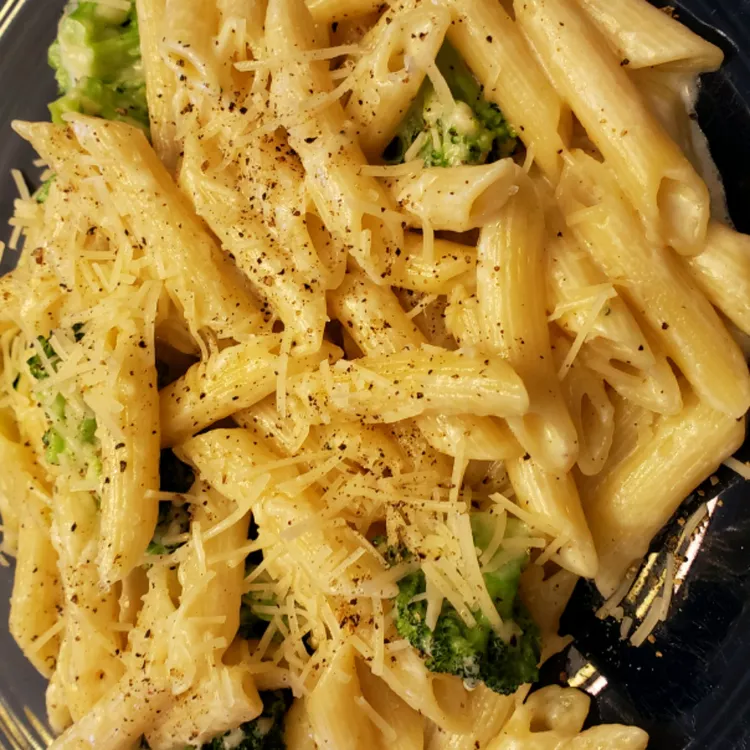

This classic Italian dish is both a quick dinner recipe and a showstopper for any get together!
The creamy, cheesy goodness of this dish is sure to win the hearts of literally anyone, as well as fill their bellies!
Add the flour and butter in a pan and cook the flour until golden
Once golden, and the garlic and sautee for a little bit
Then add the heavy whipping cream and stir until it starts to bubble
In a seperate pot, boil water and add salt to it. Cook the pasta until it is how you like it
Add the cheese to the cream (as much as you want) until the sauce thickens some more
Drain pasta and add that and spinach to the sauce. Add salt and pepper to taste
Enjoy!